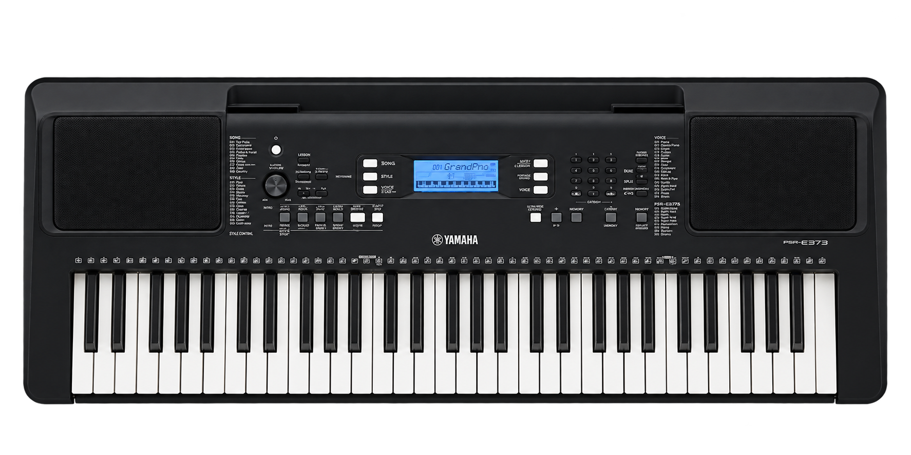

Teclado Digital 61 teclas | Yamaha - PSR-E373
Yamaha - modelo: PSR-E373
El PSR-E373 es un teclado portátil modelo estándar de 61 teclas para los tecladistas principiantes, o para tecladistas que quieran tocar en vivo. Está cargado con funciones versátiles, un mecanismo de teclado expresivo sensible al tacto y muchas funciones convenientes para que hasta los principiantes disfruten de tocarlo de inmediato.
Caracteristicas
- 61 teclas sensibles al tacto
- 622 voces
Stock disponible: 3 unidades
$249.990